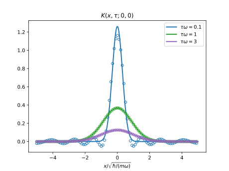

利用虚时传播子求解定态散射问题
利用虚时传播子求解定态散射问题
本文考虑一维问题
传播子(propagator)
如果 \(\hat{H}\) 不含时，虚时传播子为
\[ \begin{align} K(x, \tau; x', 0) = \langle x | e^{-\hat{H}\tau} | x'\rangle = \sum_n e^{-E_n\tau}\langle x| n\rangle \langle n| x'\rangle \end{align} \]其中 \(|n\rangle\) 是 \(\hat{H}\) 的本征态
\[ \begin{align} \hat H | n\rangle = E_n | n\rangle \end{align} \]散射问题
\[ \begin{align} (\hat{H} + \hat{V} )|\phi\rangle = E|\phi\rangle \end{align} \]移项并投影到 \(\hat{H}\) 的本征态 \(|n\rangle\) 上
\[ \begin{align} \langle n|(\hat{H} - E )|\phi\rangle = -\langle n|\hat{V}|\phi\rangle \end{align} \] \[ \begin{align} \langle n|\phi\rangle =& -\frac{1}{E_n - E }\langle n|\hat{V}|\phi\rangle \\ =& -\frac{1}{E_n - E }\langle n|\hat{V}|\phi\rangle \\ =&-\int_0^{\infty} \mathrm{d}\tau \, e^{-(E_n - E)\tau}\langle n|V|\phi\rangle \\ =&-\int_0^{\infty} \mathrm{d}\tau \, e^{E\tau}\cdot e^{-E_n \tau}\langle n|V|\phi\rangle \end{align} \]最后一步 Schwinger parametrization 需要散射能量 \(E\) 小于 \(E_n\).
散射波函数可以写成
\[ \begin{align} \phi(x) = \langle x|\phi\rangle = \sum_n \langle x | n \rangle \langle n|\phi\rangle \end{align} \]代入我们之前算得的 \(\langle n |\phi\rangle\)
\[ \begin{align} \phi(x) =& -\int_0^{\infty} \mathrm{d}\tau \, e^{E\tau}\cdot \sum_n e^{-E_n \tau} \langle x | n \rangle \langle n|V|\phi\rangle \\ =& -\int_0^{\infty} \mathrm{d}\tau \, e^{E\tau}\cdot \int \mathrm{d} x'\, \sum_n e^{-E_n \tau} \langle x | n \rangle \langle n|x'\rangle\langle x'|V|\phi\rangle \end{align} \]会发现其中出现了传播子.就得到
\[ \begin{align} \phi(x) =& -\int_0^{\infty} \mathrm{d}\tau \, e^{E\tau}\cdot \sum_n e^{-E_n \tau} \langle x | n \rangle \langle n|V|\phi\rangle \\ =& -\int_0^{\infty} \mathrm{d}\tau \, e^{E\tau}\cdot \int \mathrm{d} x'\, \langle x'|V|\phi\rangle K(x, \tau; x', 0) \end{align} \]例: 一维简谐势中接触吸引的两粒子
通过质心相对坐标分离后，相对运动部分的哈密顿量为
\[ \begin{align} \hat{H} +\hat{V} = \frac{\hat{p}^2}{2\mu} + \frac{\mu}{2}\omega^2 \hat{x}^2 + \hat{V} \end{align} \]其中 \(\hat{V}\) 是接触相吸引互作用，
\[ \begin{align} \hat{V} |x\rangle = -g\delta(x) |x\rangle \end{align} \]那么散射波函数为
\[ \begin{align} \phi(x) =& -\int_0^{\infty} \mathrm{d}\tau \, e^{E\tau}\cdot \int \mathrm{d} x'\, \langle x'|V|\phi\rangle K(x, \tau; x', 0) \\ =& g \phi(0)\int_0^{\infty} \mathrm{d}\tau \, e^{E\tau}\cdot K(x, \tau; x', 0) \end{align} \]其中的传播子即为一维谐振子的传播子: Mehler kernel。
数值验证传播子
import numpy as np
import matplotlib.pyplot as plt
import scipy.integrate as integrate
from scipy.special import hermite
import math
# x = np.linspace(-3, 3)
# check hermite polynomials
# plt.plot(x, hermite(3)(x))
# plt.plot(x, 8*x**3 - 12*x, 'x')
def ho_eig(x, n, m=1, o=1):
"""harmonic oscillator eigenfunctions and eigenvalues"""
psi = 1 / np.sqrt(2**n * math.factorial(n))
psi *= (m*o / np.pi)**(1/4)
psi *= np.exp(-m*o * x**2 / 2)
psi *= hermite(n)(np.sqrt(m*o) * x)
energy = (n + 1/2) * o
return energy, psi
# check ho_eig
# x = np.linspace(-10, 10, 1000)
# plt.plot(x, ho_eig(x, 3)[1])
# integrate.quad(lambda x:(ho_eig(x, 3)[1])**2,-10, 10)
def Mehler_kernel(x, tau, x0=0, m=1, o=1):
"""propagator of 1D harmonic oscillator, also known as Mehler kernel"""
K = np.sqrt(m*o/2/np.pi/np.sinh(o*tau))
K *= np.exp(-(m*o*(x**2 + x0**2)*np.cosh(o*tau) - 2*x*x0)/2/np.sinh(o*tau))
return K
# check Mehler_kernel
# x = np.linspace(-10, 10, 1000)
# for ti in [0.1, 1, 2]:
# plt.plot(x, Mehler_kernel(x, tau=ti))
# print(integrate.quad(lambda x:Mehler_kernel(x, tau=0.1), -5, 5))
def HO_propagator(x, tau, x0=0, m=1, o=1, cut=15):
"""1D harmonic oscillator propagator, by eigenfunction expansion"""
p = 0
for n in range(cut):
energy, psi = ho_eig(x, n)
_, psi0 = ho_eig(x0, n)
p += np.exp(-energy*tau) * psi * psi0
return p
# compare the results of 1D harmonic oscillator propagator given by two methods
x = np.linspace(-5, 5, 1000)
for ti in [0.1, 1, 3]:
p = plt.plot(x, Mehler_kernel(x, tau=ti), lw=2,
label=rf'$\tau\omega={ti}$')
plt.plot(x[::10], HO_propagator(x, tau=ti)[::10], lw=0,
marker='o', mec=p[0].get_color(), ms=5, mfc='none')
print(integrate.quad(lambda x:Mehler_kernel(x, tau=0.1), -5, 5))
plt.title(r'$K(x, \tau; 0, 0)$')
plt.xlabel(r'$x/\sqrt{\hbar/(m\omega)}$')
plt.legend()
plt.savefig('HO_propagator.svg', transparent=True)
